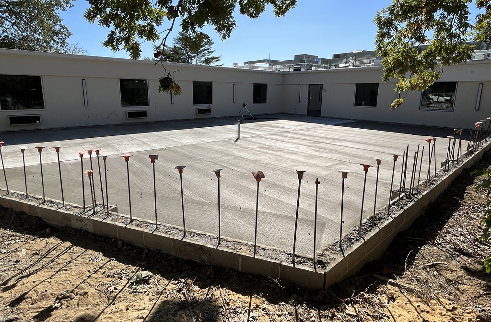
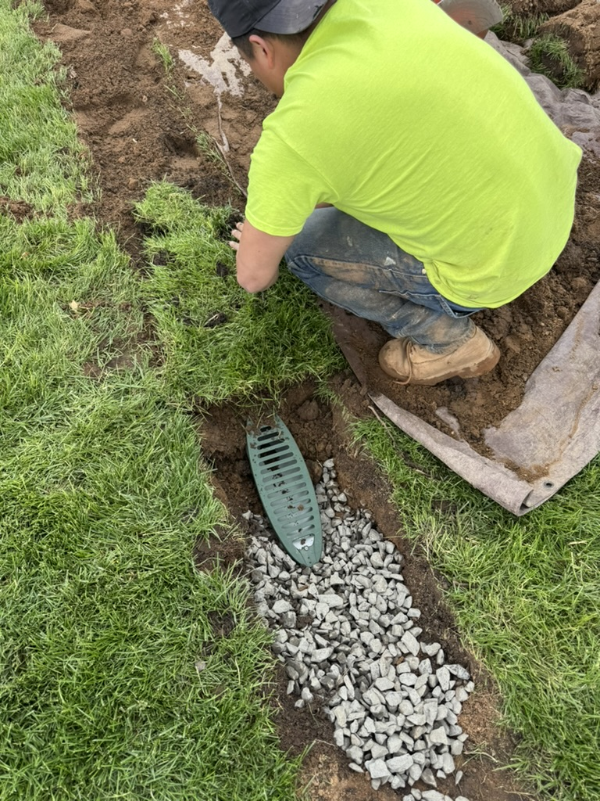
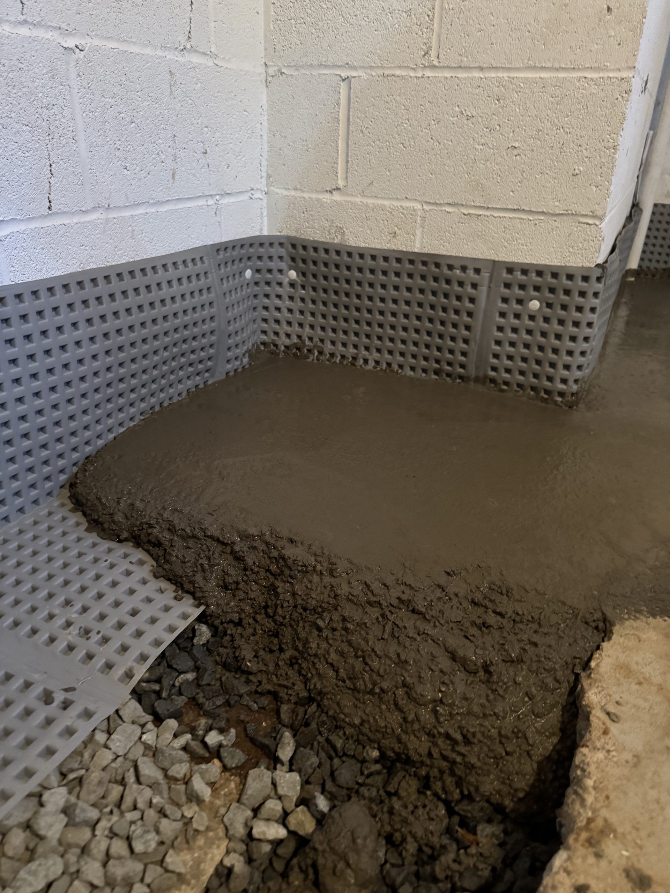
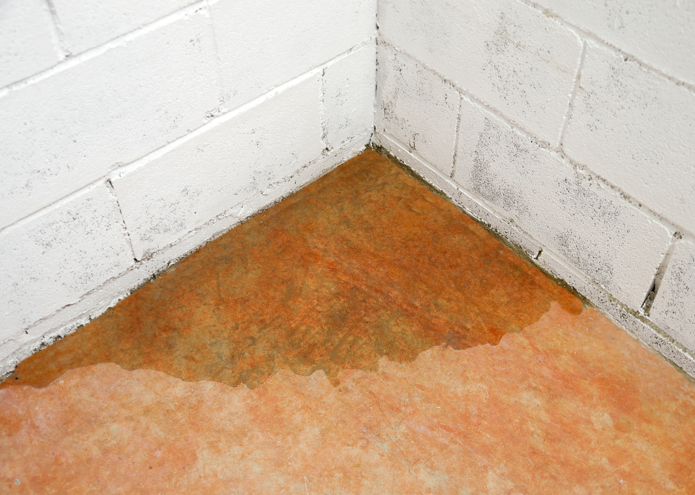
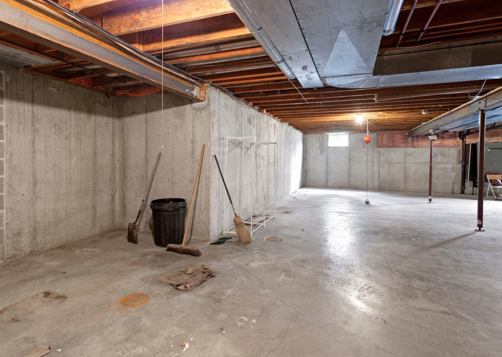
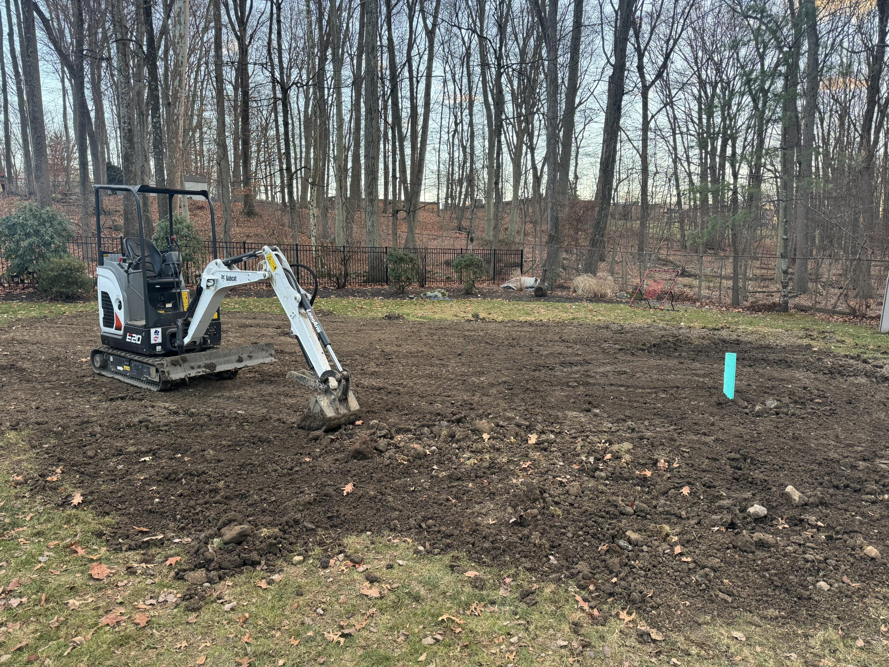
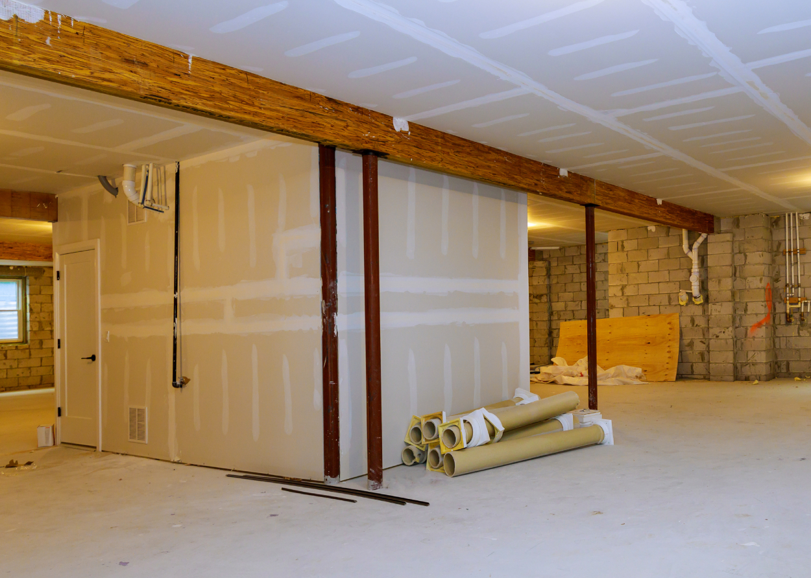
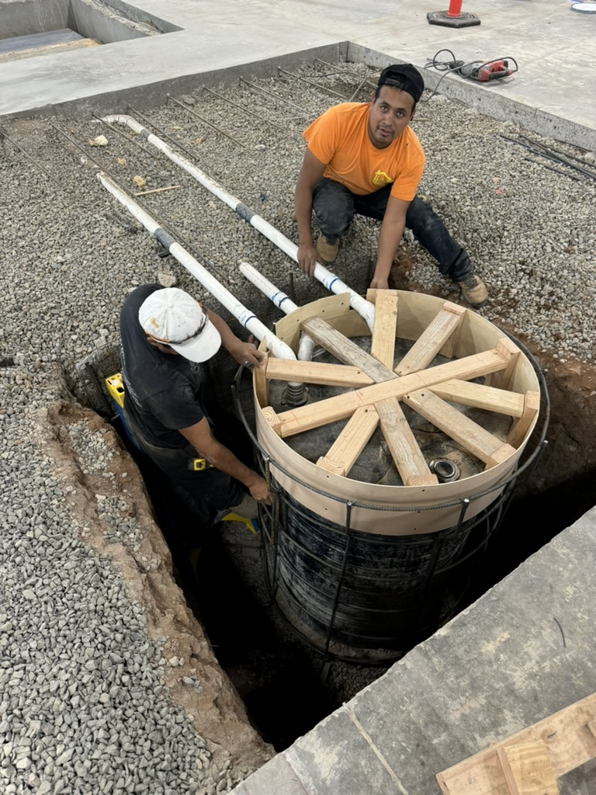

Heavy rain in Montclair shouldn’t mean holding your breath every time the forecast calls for storms.
In Montclair we handle exterior french drains, part of everything we do in Montclair.
Call or text (917) 691-8411. Open 24 hours, and you hear back within the hour.
At ARD Waterproofing, exterior French drain installation in Montclair is not a side service,it’s a core part of what we do every day across Essex County. We start by understanding the way water moves across your property, how it collects around your house, and where it needs to go instead. Then we design a custom system that fits your yard, soil conditions, and foundation style.
From the first inspection through final cleanup, our team treats your home like our own. That means showing up when we say we will, explaining what we’re doing in plain language, and keeping the work area as neat as possible,even when we’re digging trenches and moving a lot of soil. There’s no pressure, no gimmicks.
Exterior French drains are only as good as the design behind them. A poorly placed drain or one set at the wrong depth might move a little water but still leave your basement damp every time there’s a severe storm.
Waterproofing is not about quick patches; it’s about long-term results you can feel every time storm clouds roll in. ARD Waterproofing’s approach centers on building systems that keep working season after season, so you see a measurable difference in how dry your basement stays and how stable your foundation feels.
Once we’ve evaluated your Montclair property, we provide a clear, written estimate. That estimate explains the recommended scope of work, whether it’s exterior French drains, interior French drains, sump pump installation, channel drains, foundation waterproofing, or a combination of solutions. We break down the major steps.
Interior French drains are one of the most effective tools for controlling water that has already reached your foundation. Installed along the inside perimeter of your basement, these drains collect water that seeps through walls or rises at the cove joint and carry it to a sump pump for discharge. For many Montclair homes, especially those with finished basements or limited exterior access, interior French drains offer a practical, less disruptive way to gain reliable, year-round protection from leaks.

Interior French drains work on a simple principle: instead of fighting water at every tiny crack or seam, they provide a controlled path for water to follow. In practice, this involves creating a drainage channel along the interior edge of the basement floor, near the base of the foundation walls. When groundwater builds up outside, or water seeps through porous masonry, it naturally follows gravity to the lowest point,which is now the interior French drain. From there, water flows into a sump basin and is pumped away from your Montclair home.
This system is particularly valuable in a climate with significant seasonal variation. During heavy fall rains, winter thaws, and spring storms, water tables can fluctuate quickly around Montclair. Instead of allowing that water to push directly through walls and onto your floors, the interior French drain and sump pump combination relieves pressure and handles the excess. When designed correctly, the system continues to work quietly in the background, whether you’re at home or away, minimizing the chance of surprise leaks or floods.
Understanding the installation process can make the idea of adding an interior French drain much less intimidating. ARD Waterproofing begins with a detailed walkthrough of your basement to map the locations of leaks, utilities, and any existing finishes. We identify where the drain will be installed, where the sump basin will sit, and how discharge lines will exit the home in a way that complies with local practices and avoids creating new water problems outside. Before any cutting starts, we explain the sequence so you know exactly what to expect each day.
The physical work begins by carefully cutting and removing a narrow strip of the concrete floor along the foundation walls. We do this using appropriate tools and dust control methods to keep the impact on the rest of your home as minimal as possible. Once the concrete is removed, we excavate a trench to the proper depth, install the perforated drain pipe, and surround it with clean stone to promote free water flow. The drain is pitched gently toward a sump basin, where a pump will collect and remove the water. Where needed, we may add wall drainage channels or panels that guide moisture down into the drain, particularly in areas with known seepage.
Basement leaks can appear in a variety of ways, and homeowners often try a series of small fixes before realizing they need a more comprehensive solution. Interior French drains resolve many of the most frequent leak patterns we see in Montclair basements. One common issue is water emerging where the wall meets the floor, known as the cove joint. This is a natural weak point because it’s the seam between two different structural elements. Interior French drains are placed precisely to intercept this water before it spreads across the floor.
Interior French drains also help resolve issues where water appears during only the heaviest storms. In these cases, hydrostatic pressure builds up in the soil around the foundation, and water finds any available entry point. With a properly designed interior system, that pressure is relieved as water moves into the drain instead of searching for cracks to exploit. For Montclair homeowners who have grown accustomed to placing towels or a wet vac in the same corner every time it rains, this kind of system can finally offer a lasting, reliable solution.
Exterior French drains are a frontline defense against water reaching your foundation in the first place. Installed outside along problem areas or around the base of your home, these systems collect groundwater and surface runoff before it can press against basement walls and seep inside. For many Montclair properties,especially those on hillsides or with known grading challenges,exterior French drains make the difference between a perpetually damp basement and one that stays consistently dry.
Installing an exterior French drain offers a range of benefits that go beyond simply stopping a specific leak. One of the primary advantages is pressure relief. By capturing water in a dedicated drainage trench, you reduce the hydrostatic pressure pushing against your foundation walls. This lessens the likelihood of new cracks forming or existing cracks widening over time, helping to protect the structural integrity of your home. In Montclair, where many properties experience significant runoff due to sloped lots and dense development, this pressure relief can be particularly valuable.
Another major benefit is proactive moisture control. Instead of allowing water to saturate the soil directly against your foundation, the French drain collects and moves it away. This can lead to drier basement walls, fewer musty odors, and a more stable environment, even if you also use interior solutions. Exterior French drains are especially effective when coordinated with extended downspouts and properly graded landscaping, creating a layered defense that tackles water at multiple points.
Because exterior French drains involve working around your yard and near your foundation, understanding the installation process can help you feel more comfortable with the project. ARD Waterproofing begins with a thorough assessment of your Montclair property, identifying where water is collecting, how it flows during storms, and which areas of the foundation are most affected. We then plan the route of the French drain, determine the appropriate depth, and select a suitable discharge location that complies with good drainage practices.
On installation day, we carefully mark utilities and protect nearby features. Our crew excavates a trench along the planned path, typically sloped gently so that water will flow naturally toward the discharge point. The depth and width of the trench are based on the drainage needs and the foundation’s configuration. Once excavation is complete, we add a bedding layer of clean stone, install perforated drain pipe, and cover it with additional washed gravel. To reduce the risk of silt and soil clogging the system over time, we wrap the assembly in appropriate filter fabric before backfilling with soil.
Many Montclair homes sit on lots with noticeable slopes, shared driveways, or tight side yards that naturally funnel water into specific low spots. These problem areas can become chronic sources of moisture against foundation walls, leading to repeated leaks and erosion. Exterior French drains are a practical solution for these situations because they can be designed to fit the exact layout of your yard, driveway, or walkway. Instead of letting water rush downhill and pond next to your house, we intercept it along the way and redirect it to a more appropriate outlet.
For sloped yards, French drains are often placed at strategic points where runoff converges. This might be along the uphill side of a foundation, at the base of a retaining wall, or near property lines where water from neighboring lots flows onto your land. In driveways and walkways, French drains can be combined with channel drains or installed along edges to catch water that would otherwise travel directly toward the house. These configurations are especially useful in Montclair’s older neighborhoods, where driveways may tilt toward the home and bring significant surface water with each storm.
While French drains focus on subsurface water, channel drains tackle surface runoff that can quickly overwhelm driveways, patios, and walkways. These linear drains are installed flush with the surface, capturing rainwater where it falls and directing it into a controlled drainage path instead of allowing it to flow freely toward your foundation or garage. In a town like Montclair, where many homes sit close together, and lots are carefully graded, channel drains can make the difference between a safe, usable hardscape and one that regularly floods or ices over.
Surface water often seems harmless at first glance, but over time, it can cause significant damage. Water running down a driveway can find its way under garage doors, seep into basements along foundation walls, or erode soil where pavement meets lawn. On patios and walkways, standing water can create slip hazards, contribute to premature material deterioration, and worsen freeze-thaw damage during New Jersey winters. Channel drains provide a straightforward, effective way to capture this water at the surface before it becomes a larger issue.
Installed in strategic locations, channel drains act like narrow, low-profile gutters built into the ground. As rain falls and flows across the surface, it drops into the drain instead of continuing to travel unchecked. Inside the drain body, water is guided to an outlet that connects to a suitable discharge point or to a broader drainage system serving the property. In Montclair, where many driveways slope toward the house or share run-off with neighboring properties, these drains can be particularly valuable in preventing water from accumulating where it shouldn’t.
Your Montclair property may have several areas where water consistently accumulates, and these are often prime candidates for channel drain installation. Driveways that slope down toward a garage or foundation wall are a classic example. Without a way to intercept that flow, water can pass under garage doors, seep into the edges of the slab, or find its way into basement spaces behind the wall. Placing a channel drain near the base of the driveway creates a barrier that collects and redirects run-off before it can cause trouble.
Walkways and patios are another common location for channel drains, especially when they sit lower than surrounding landscaping or when they were installed without sufficient slope. In these areas, standing water not only causes inconvenience but can also contribute to slip hazards and damage over time. A well-placed channel drain along the edge or across a low section can help keep these surfaces more usable and comfortable after storms. Around pool decks or outdoor living spaces, drains can be added discreetly to manage splashing and rainfall without detracting from the overall appearance.
Homeowners often wonder when to choose channel drains versus relying solely on grading, French drains, or other surface solutions. The answer typically comes down to the type of water you are dealing with and the constraints of your property. Grading improvements are an excellent first step, but in tightly built Montclair neighborhoods, there isn’t always enough room or slope to move water away purely through reshaping the land. In these cases, channel drains provide a targeted tool to handle water in specific high-traffic or constrained locations.
French drains excel at collecting subsurface water, but they are not designed to directly manage large volumes of water flowing across pavement or hardscapes. Channel drains, on the other hand, are built precisely for that purpose. They capture water before it infiltrates joints, cracks, or edges where it could pass down to the foundation level. When our team assesses your property, we consider all available options,grading, downspout extensions, French drains, channel drains, and sump pumps,and recommend the combination that best fits both your needs and your physical space.
We routinely help homeowners with challenges such as recurring yard puddles, water entering at unusual locations, or drainage issues caused by neighboring properties or shared driveways. In some cases, the answer involves adjusting grading, adding targeted drainage components, or reinforcing existing structures affected by long-term moisture exposure. Because we focus on waterproofing and drainage specifically, we bring a deep understanding of how different systems interact and what it takes to build a cohesive, long-term plan.
Some water problems don’t fit neatly into a single category. Perhaps you have a basement wall that only leaks when snow melts rapidly, or a side yard that turns into a small pond every spring despite having decent grading. Maybe water is appearing in a section of your home that has no obvious entry point. These are the kinds of puzzles ARD Waterproofing is prepared to solve with custom waterproofing solutions tailored to your Montclair property.
This custom approach helps ensure that your investment goes toward effective, lasting solutions rather than trial-and-error fixes. In a town with as much architectural variety as Montclair, that flexibility is essential. Whether your home is a historic property with unique construction or a newer build facing unexpected drainage challenges, we’re committed to finding a solution that fits both the building and the way you live in it.
Persistent water issues can be among the most frustrating problems for homeowners. Maybe you’ve already tried extending gutters, regrading a section of the yard, or even patching cracks with sealant, only to see the same leak return with the next big storm. When that happens, it’s a sign that the underlying cause hasn’t yet been fully identified. ARD Waterproofing specializes in diagnosing these stubborn problems by looking beyond the most obvious symptoms.
In the basement, that may mean examining wall materials, seams, and previous repairs, as well as considering how water may be traveling unseen behind finishes or through the soil. Outside, we pay attention to subtle cues like erosion patterns, differences in vegetation, and how water behaves along property boundaries or shared features. For Montclair homes, we also consider the broader context of the neighborhood,such as whether your property sits at a local low point or receives runoff from higher elevations.
Waterproofing systems work best when they’re part of an ongoing maintenance mindset rather than a one-time project you forget about entirely. While many of the components we install,like French drains, sump pumps, and encapsulation systems,are designed for long-term performance, they still benefit from periodic checks and upkeep. ARD Waterproofing offers guidance and, when desired, structured maintenance plans to help Montclair homeowners protect their investments over the long haul.
By treating waterproofing as an ongoing part of home care, similar to HVAC servicing or roof inspections, you greatly reduce the risk of unexpected failures and the costly damage that can result. ARD Waterproofing’s local presence in and around Montclair means we’re available not just for installation, but for the follow-up and support that keep your home dry and protected year after year.
All of it on one estimate. Each one opens its full service page.
"He came out within 24 hours, had a detailed estimate for me that evening that didn't just explain what they were going to do but why it was required, and ARD completed the job shortly after that (1.5 days to do the work). The lifetime warranty made me feel extra confident that they knew what they were doing."
"We worked with the ARD Waterproofing Company to install French Drains and a sump pump when our basement flooded numerous times. ARD was extremely helpful, professional and efficient. The project was completed in the time promised and we are happy with the results."
"Everything went incredibly well. Men who worked on the job were skilled and respectable. The owner of the company Was easy to deal with, honest , Personable, I recommend 100%."
Waterproofing and foundation drainage across West Essex, Union, Passaic and Morris Counties, dispatched from Smull Ave in West Caldwell.
Do not see your town? We cover all of West Essex, Union, Passaic and Morris Counties. Call and ask.
Determining whether you need an exterior French drain, an interior system, or a different approach altogether starts with understanding where your water problem originates.
The timeline for a French drain or waterproofing project depends on the size of your home, the complexity of the work, and the specific solutions being installed. That said, most projects follow a clear and predictable schedule once work begins.
Any exterior project that involves digging will have some impact on your yard, but how that impact is managed and restored makes a big difference. When ARD Waterproofing installs exterior French drains in Montclair, we plan the work to be as respectful as possible of your property and landscaping.
The lifespan of waterproofing components depends on the quality of materials, the installation, and the conditions they operate under. Properly installed French drains,both interior and exterior,are designed for long-term use.
Homeowners understandably want assurance that their investment in waterproofing will stand the test of time. ARD Waterproofing backs its work with appropriate warranties that reflect the type of system installed and the conditions it’s designed to handle.
Waterproofing and French drain projects are tailored to each home, so costs can vary based on several key factors. The size of the area being treated is one of the most significant.
Yes. If you’re currently experiencing an active leak or basement flooding, ARD Waterproofing understands that you need quick, practical support. While long-term solutions like French drains, sump pumps, and foundation waterproofing require careful planning and installation, there are often immediate steps we can help you take to stabilize the situation and limit damage.





